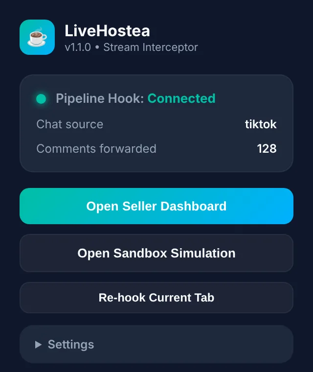
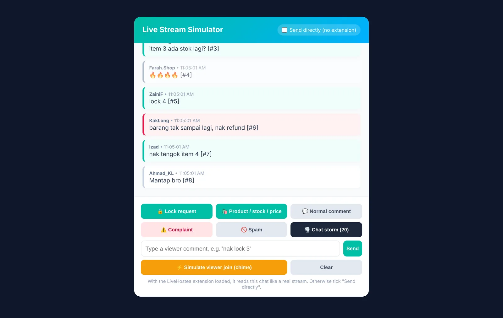
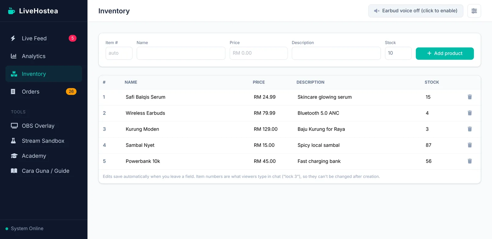
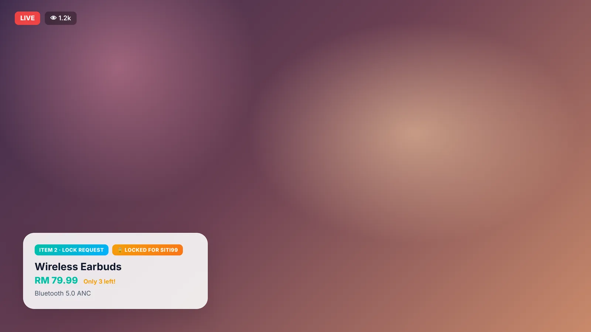
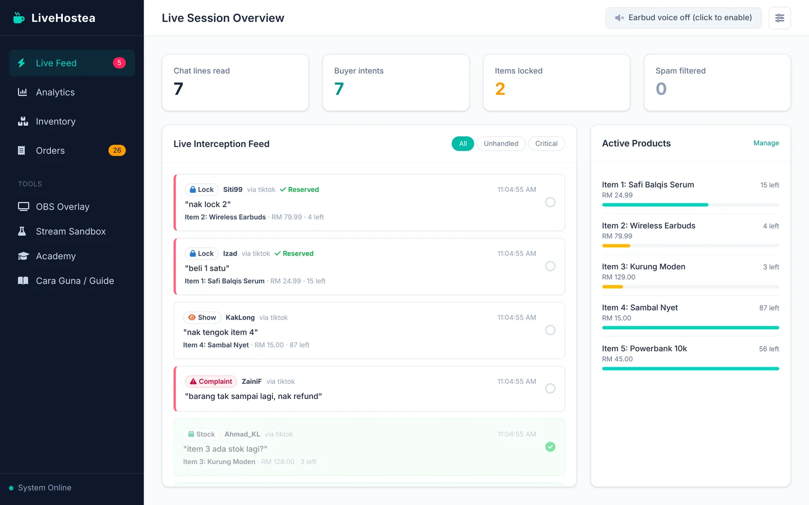
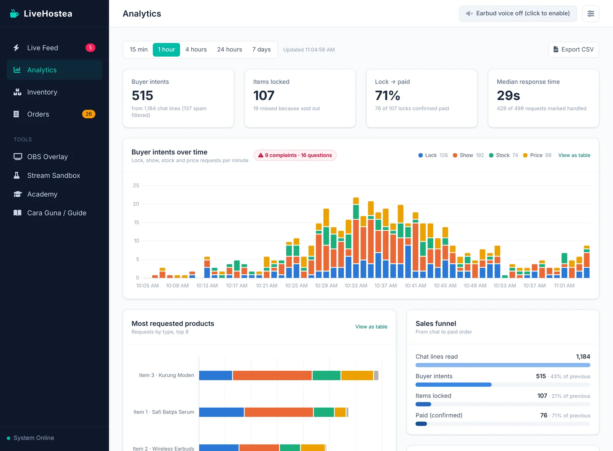

1Gambaran ringkasOverview
LiveHostea ada tiga bahagian yang bekerjasama. Semuanya berjalan di komputer anda sendiri.
LiveHostea has three parts that work together. All of them run on your own computer.
2Apa yang anda perlukanWhat you need
- Laptop atau PC Windows 10/11 atau macOS. Anda boleh stream dari telefon, tapi chat perlu dibuka di komputer.
- A laptop or PC running Windows 10/11 or macOS. You can stream from your phone, but the chat has to be open on the computer.
- Google Chrome (atau Edge / Brave).
- Google Chrome (or Edge / Brave).
- Aplikasi LiveHostea untuk Windows atau Mac. Percuma; kita muat turun dalam langkah 3.
- The LiveHostea app for Windows or Mac. It's free; we download it in step 3.
- Earbud Bluetooth (atau earphone berwayar) untuk dengar bisikan.
- A Bluetooth earbud (or wired earphones) to hear the whispers.
- OBS Studio jika anda mahu overlay di skrin live. Pilihan.
- OBS Studio if you want on-screen overlays. Optional.
3Pasang LiveHosteaInstall LiveHostea
LiveHostea ialah aplikasi biasa. Muat turun, pasang dan buka; tiada terminal atau kod.
LiveHostea is a normal app. Download, install and open it; no terminal or code.
⬇ Muat turun untuk WindowsDownload for Windows
- Buka fail
LiveHostea-Windows.exeyang dimuat turun (biasanya dalam folder Downloads). - Open the downloaded
LiveHostea-Windows.exe(usually in your Downloads folder). - Jika keluar skrin biru "Windows protected your PC", klik More info, kemudian Run anyway.
- If a blue "Windows protected your PC" screen appears, click More info, then Run anyway.
- Ikut langkah pemasangan (klik Next / Install). Ikon LiveHostea akan ada di desktop dan Start menu.
- Follow the installer (click Next / Install). A LiveHostea icon is added to your desktop and Start menu.
⬇ Mac (Apple Silicon M1–M4)Mac (Apple Silicon M1–M4) ⬇ Mac (Intel)Mac (Intel)
Tak pasti? Klik logo Apple di penjuru kiri atas skrin → About This Mac. Jika tertulis Chip Apple M…, pilih Apple Silicon. Jika Processor Intel, pilih Intel.
Not sure? Click the Apple logo in the top-left corner of the screen → About This Mac. If it says Chip Apple M…, choose Apple Silicon. If it says Processor Intel, choose Intel.
- Buka fail
.dmgyang dimuat turun dan seret LiveHostea ke folder Applications. - Open the downloaded
.dmgfile and drag LiveHostea into the Applications folder. - Buka LiveHostea dari folder Applications.
- Open LiveHostea from the Applications folder.
- Kali pertama, Mac mungkin kata "Apple could not verify LiveHostea". Klik Done, kemudian buka System Settings → Privacy & Security, skrol ke bawah dan klik Open Anyway di sebelah LiveHostea. Sahkan dengan kata laluan Mac anda.
- The first time, your Mac may say "Apple could not verify LiveHostea". Click Done, then open System Settings → Privacy & Security, scroll down and click Open Anyway next to LiveHostea. Confirm with your Mac password.
Kenapa ada amaran? Windows dan Mac memaparkan amaran untuk aplikasi yang belum didaftarkan dengan sijil berbayar. LiveHostea selamat: setiap pemasang dibina secara automatik daripada kod kami oleh GitHub, dengan cara yang sama untuk setiap versi. Anda hanya perlu buat ini sekali.
Why the warning? Windows and Mac warn about apps that aren't registered with a paid certificate yet. LiveHostea is safe: every installer is built automatically from our code by GitHub, the same way for every release. You only do this once.
Bila dibuka, dashboard LiveHostea terus muncul. Semua data (produk, pesanan, analitik) disimpan dalam komputer anda.
When it opens, the LiveHostea dashboard appears straight away. All data (products, orders, analytics) is stored on your computer.
Nak tengok dashboard penuh dengan data dulu? Dalam aplikasi, klik menu LiveHostea → Load demo data…. Bila nak live betul-betul, klik LiveHostea → Start fresh untuk kosongkan semula.
Want to see the dashboard full of data first? In the app, click LiveHostea → Load demo data…. When you're ready for your real live, click LiveHostea → Start fresh to clear it.
Setiap kali nak live selepas ini
Every time you go live after this
Buka aplikasi LiveHostea dari desktop, Start menu atau folder Applications. Itu sahaja. Bila versi baharu keluar, aplikasi akan beritahu anda.
Open the LiveHostea app from your desktop, Start menu or Applications folder. That's it. When a new version comes out, the app tells you.
Lanjutan: jalankan dari kod sumber (Node.js)Advanced: run from source code (Node.js)
Untuk pembangun yang mempunyai akses kepada kod sumber LiveHostea. Anda tidak perlu ini jika menggunakan aplikasi di atas.
For developers with access to the LiveHostea source code. You don't need this if you use the app above.
a. Pasang Node.js
a. Install Node.js
Pergi ke nodejs.org, muat turun versi LTS, dan pasang dengan tetapan asal (tekan Next sehingga selesai).
Go to nodejs.org, download the LTS version and install it with the default settings (keep clicking Next).
b. Muat turun LiveHostea
b. Download LiveHostea
Muat turun fail ZIP ini dan extract ke folder yang mudah dicari, contohnya Documents\LiveHostea.
Download this ZIP file and extract it somewhere easy to find, for example Documents/LiveHostea.
c. Buka terminal dalam folder itu
c. Open a terminal in that folder
Buka folder LiveHostea dalam File Explorer. Klik pada bar alamat di atas, taip cmd dan tekan Enter. Tetingkap hitam (Command Prompt) akan terbuka dalam folder itu.
Open the LiveHostea folder in File Explorer. Click the address bar at the top, type cmd and press Enter. A black window (Command Prompt) opens in that folder.
Buka aplikasi Terminal. Taip cd diikuti satu jarak, kemudian seret folder LiveHostea ke dalam tetingkap Terminal dan tekan Enter.
Open the Terminal app. Type cd followed by a space, drag the LiveHostea folder into the Terminal window and press Enter.
d. Pasang dan mulakan
d. Install and start
Taip arahan ini satu demi satu. Arahan pertama hanya perlu sekali sahaja.
Type these commands one at a time. The first one is only needed once.
npm installnpm startBila nampak 🚀 LiveHostea Server running on http://localhost:3000, buka http://localhost:3000 di Chrome. Itulah dashboard anda.
When you see 🚀 LiveHostea Server running on http://localhost:3000, open http://localhost:3000 in Chrome. That's your dashboard.
Jangan tutup tetingkap terminal semasa live. Itulah yang menjalankan LiveHostea. Untuk berhenti, tekan Ctrl + C.
Don't close the terminal window while you're live; it's what runs LiveHostea. To stop it, press Ctrl + C.
Nak tengok dashboard penuh dengan data dulu? Jalankan npm run demo sebelum npm start untuk masukkan contoh sesi live selama sejam. Bila nak guna betul-betul, jalankan npm run setup untuk kosongkan semula.
Want to see the dashboard full of data first? Run npm run demo before npm start to load a sample one-hour live session. When you're ready for real use, run npm run setup to reset it.
Setiap kali nak live selepas ini
Every time you go live after this
Buka terminal dalam folder LiveHostea (langkah c) dan taip npm start. Itu sahaja.
Open a terminal in the LiveHostea folder (step c) and type npm start. That's it.
4Pasang extension ChromeInstall the Chrome extension
Extension membaca chat live di Chrome dan menghantarnya ke aplikasi LiveHostea. Dalam aplikasi, klik menu Help → Install Chrome extension….
The extension reads the live chat in Chrome and sends it to the LiveHostea app. In the app, click Help → Install Chrome extension….
- Jika extension sudah ada di Chrome Web Store, halaman itu akan dibuka. Klik Add to Chrome. Siap!
- If the extension is on the Chrome Web Store, that page opens. Click Add to Chrome. Done!
- Jika belum, aplikasi menunjukkan folder extension. Ikut langkah ini sekali sahaja:
- If not yet, the app shows you the extension folder. Follow these steps once:
- Di Chrome, taip
chrome://extensionspada bar alamat dan tekan Enter. - In Chrome, type
chrome://extensionsin the address bar and press Enter. - Hidupkan Developer mode (suis di penjuru kanan atas).
- Turn on Developer mode (the switch in the top-right corner).
- Klik Load unpacked dan pilih folder yang ditunjukkan oleh aplikasi (klik Show folder).
- Click Load unpacked and choose the folder the app shows you (click Show folder).
- Klik ikon kepingan puzzle 🧩 di Chrome dan pin LiveHostea supaya ikonnya sentiasa kelihatan.
- Click the puzzle-piece icon 🧩 in Chrome and pin LiveHostea so its icon is always visible.

Klik ikon LiveHostea pada mana-mana halaman chat untuk lihat status. Connected bermaksud semuanya berfungsi.
Click the LiveHostea icon on any chat page to see its status. Connected means everything is working.
5Berlatih dengan sandboxPractise in the sandbox
Sandbox ialah "live palsu" untuk anda cuba LiveHostea tanpa penonton sebenar. Buka http://localhost:3000/test dalam tab baharu, dan letak dashboard di sebelah.
The sandbox is a "fake live" for trying LiveHostea without real viewers. Open http://localhost:3000/test in a new tab and put the dashboard next to it.

- Klik 🔒 Lock request, ⚠️ Complaint atau 🌪️ Chat storm dan lihat dashboard mengisih mesej.
- Click 🔒 Lock request, ⚠️ Complaint or 🌪️ Chat storm and watch the dashboard sort the messages.
- Taip mesej sendiri dalam kotak di bawah, contohnya
nak lock 3. - Type your own message in the box at the bottom, for example
nak lock 3. - Belum pasang extension? Tandakan Send directly (no extension).
- Haven't installed the extension yet? Tick Send directly (no extension).
6Masukkan produk andaAdd your products
Di dashboard, buka tab Inventory. Isi nama, harga dan stok, kemudian klik Add product. Untuk ubah, klik terus pada mana-mana sel; ia disimpan automatik.
In the dashboard, open the Inventory tab. Fill in the name, price and stock, then click Add product. To edit, click any cell; changes save automatically.

Nombor item (#) ialah apa yang pembeli taip. Kalau Kurung Moden ialah item 3, pembeli taip "lock 3". Sebut nombor item dengan jelas semasa live, atau letak label nombor pada setiap produk.
The item number (#) is what buyers type. If Kurung Moden is item 3, buyers type "lock 3". Say the item number clearly during your live, or put a number label on each product.
7Hidupkan suara earbudTurn on earbud voice
- Sambungkan earbud ke komputer, dan pastikan ia dipilih sebagai output bunyi (Windows: ikon speaker di taskbar; Mac: menu Bunyi).
- Connect your earbud to the computer and make sure it's selected as the sound output (Windows: the speaker icon in the taskbar; Mac: the Sound menu).
- Di dashboard, klik butang Earbud voice off di atas. Ia bertukar kepada Earbud voice on dan anda akan dengar "LiveHostea voice ready".
- In the dashboard, click the Earbud voice off button at the top. It changes to Earbud voice on and you'll hear "LiveHostea voice ready".
- Klik ikon ⚙️ di sebelahnya untuk ubah tetapan:
- Click the ⚙️ icon next to it to change the settings:
| Tetapan | Setting | Cadangan | Suggestion |
|---|---|---|---|
| Speed | 1.2x untuk mula. Naikkan ke 1.4x bila dah biasa. | Start at 1.2x. Go up to 1.4x once you're used to it. | |
| Read out | "Product requests & complaints". Untuk live yang sangat sibuk, pilih "Only locks & complaints". | "Product requests & complaints". For very busy lives, choose "Only locks & complaints". | |
| Voice | Pilih suara yang paling jelas untuk anda. Suara Bahasa Melayu bergantung pada komputer anda. | Pick the voice that's clearest to you. Malay voices depend on your computer. |
Pelayar perlukan satu klik sebelum boleh main bunyi. Kalau anda refresh dashboard, klik butang suara sekali lagi.
Browsers need one click before they can play sound. If you refresh the dashboard, click the voice button again.
8Sediakan overlay OBS (pilihan)Set up the OBS overlay (optional)
- Dalam OBS, di kotak Sources, klik + dan pilih Browser.
- In OBS, in the Sources box, click + and choose Browser.
- Isi URL:
http://localhost:3000/overlay, Width: 1920, Height: 1080. Klik OK. (Dalam aplikasi, menu LiveHostea → Copy OBS overlay URL menyalin URL yang betul untuk anda.) - Set URL to
http://localhost:3000/overlay, Width to 1920 and Height to 1080. Click OK. (In the app, LiveHostea → Copy OBS overlay URL copies the right URL for you.) - Overlay lutsinar, jadi tiada apa kelihatan sehingga pembeli bertanya tentang produk.
- The overlay is transparent, so nothing shows until a buyer asks about a product.

Ubah rupa overlay
Style the overlay
Buka tab Overlay dalam dashboard. Pilih tema, sudut skrin, warna, tempoh paparan dan sama ada baki stok ditunjukkan. Pratonton berubah serta-merta. Klik Save dan overlay dalam OBS bertukar rupa terus, tanpa perlu tampal URL semula. Klik Show test card in OBS untuk memastikan OBS bersambung.
Open the Overlay tab in the dashboard. Choose the theme, screen corner, colour, how long the card stays and whether stock left is shown. The preview changes as you go. Click Save and the overlay in OBS restyles straight away, with no URL to paste again. Click Show test card in OBS to check OBS is connected.
Lanjutan: pilihan pada URLAdvanced: URL options
Pilihan pada URL mengatasi gaya yang disimpan, berguna jika anda mahu dua overlay berbeza. Contoh:
URL options override the saved style, handy if you want two different overlays. For example:
http://localhost:3000/overlay?theme=dark&position=bottom-right&duration=8| Pilihan | Option | Nilai | Values |
|---|---|---|---|
theme | glass, dark, minimal | ||
position | bottom-left, bottom-right, top-left, top-right | ||
duration | Saat kad dipaparkan (2–60) | Seconds the card stays on screen (2–60) | |
accent | Warna jenama tanpa #, contohnya ff4d6d | Brand colour without #, e.g. ff4d6d | |
stock=0 | Sembunyikan baki stok | Hide stock left | |
demo=1 | Tunjuk kad contoh supaya anda boleh susun kedudukannya | Show a sample card so you can position it |
9Mula liveGo live
- Buka aplikasi LiveHostea.
- Open the LiveHostea app.
- Mula live anda seperti biasa (dari telefon, OBS atau aplikasi platform).
- Start your live as usual (from your phone, OBS or the platform's app).
- Di Chrome pada komputer, buka halaman live anda yang menunjukkan chat, contohnya halaman live di laman web TikTok, YouTube Studio, atau dashboard live penjual Shopee.
- In Chrome on the computer, open your live page that shows the chat, for example your live on the TikTok website, YouTube Studio, or the Shopee seller live dashboard.
- Klik ikon LiveHostea. Pastikan status Connected dan Chat source menunjukkan nama platform.
- Click the LiveHostea icon. Check that the status says Connected and Chat source shows the platform name.
- Hidupkan suara earbud di dashboard. Anda dah sedia!
- Turn on earbud voice in the dashboard. You're ready!
| Platform | Status | ||
|---|---|---|---|
| YouTube Live | ✅ Disokong terus (buka chat live atau "pop-out chat") | ✅ Supported (open the live chat or the "pop-out chat") | |
| Twitch | ✅ Disokong terus | ✅ Supported | |
| TikTok Live, Shopee Live | ⚠️ Percubaan. Jika chat tidak dikesan, guna "custom selectors" di bawah. | ⚠️ Best effort. If chat isn't detected, use "custom selectors" below. | |
| Lain-lain | Others | 🔧 Guna "custom selectors" | 🔧 Use "custom selectors" |
Jika extension kata "No Chat Found"
If the extension says "No Chat Found"
- Klik kanan pada satu komen dalam chat, pilih Inspect.
- Right-click one comment in the chat and choose Inspect.
- Cari elemen yang membungkus satu komen penuh (nama + mesej). Salin nama
classnya, contohnyacomment-item. - Find the element that wraps one whole comment (name + message). Copy its
classname, e.g.comment-item. - Buka popup LiveHostea → Custom selectors for this site. Isi One chat message dengan
.comment-item(titik di depan). Isi nama pengguna dan teks jika anda tahu. Klik Save settings. - Open the LiveHostea popup → Custom selectors for this site. Fill One chat message with
.comment-item(with a dot in front). Fill in username and text if you know them. Click Save settings.
10Semasa liveDuring the live

- Live Feed menunjukkan permintaan terbaru di atas. Kad dengan jalur merah ialah keutamaan tinggi (lock dan aduan).
- Live Feed shows the newest requests on top. Cards with a red stripe are high priority (locks and complaints).
- Klik kad untuk tandakan sudah dilayan. Ini juga mengira masa respons anda dalam analitik.
- Click a card to mark it handled. This also measures your response time in analytics.
- Guna penapis Unhandled untuk lihat yang belum dilayan, atau Critical untuk lock dan aduan sahaja.
- Use the Unhandled filter to see what's left, or Critical for locks and complaints only.
- Bila pembeli lock, stok terus ditolak. Bila habis, kad menunjukkan Sold out dan earbud akan beritahu anda.
- When a buyer locks, stock is reserved immediately. When it runs out, the card shows Sold out and your earbud tells you.
- Di tab Orders, klik Confirm paid bila pembeli dah bayar, atau Cancel untuk pulangkan stok.
- In the Orders tab, click Confirm paid once a buyer has paid, or Cancel to return the stock.
Pembeli yang ulang "lock 3" beberapa kali dalam 30 saat hanya dikira sekali, jadi stok tak hilang sia-sia.
A buyer who repeats "lock 3" several times within 30 seconds only counts once, so stock isn't wasted.
11Apa pembeli patut taipWhat buyers should type
LiveHostea faham pelbagai cara pembeli menaip dalam BM dan English. Beritahu penonton di awal live: "Nak beli, taip lock dan nombor item ya!"
LiveHostea understands many ways buyers type, in Malay and English. Tell viewers at the start: "To buy, type lock and the item number!"
| Jenis | Type | Contoh yang difahami | Understood examples | Apa berlaku | What happens |
|---|---|---|---|---|---|
| 🔒 Lock | lock 2, nak 3, beli item 4, cop 5!, saya ambil item 1 | Stok dikunci, pesanan dicipta, earbud beritahu baki stok | Stock reserved, order created, earbud tells you stock left | ||
| 👀 Show | item 1, nak tengok 4, #5, 5 | Kad produk muncul di overlay | Product card appears on the overlay | ||
| 📦 StokStock | item 3 ada stok lagi?, ada saiz M? | Dibacakan dengan baki stok | Read out, with stock left shown | ||
| 🏷️ HargaPrice | harga item 2 berapa, how much no 5 | Dibacakan; harga dipaparkan | Read out; price shown | ||
| ⚠️ AduanComplaint | barang tak sampai, nak refund, rosak | Keutamaan tertinggi, ditanda merah | Highest priority, marked red | ||
| 🚫 Spam | Link, "f4f", emoji sahaja, "cantikkkkkkk" | Links, "f4f", emoji only, "cantikkkkkkk" | Ditapis, tidak dipaparkan | Filtered, not shown |
Jumlah wang (rm 25) dan nombor dalam ayat panjang (postage 2 hari) tidak disalah anggap sebagai nombor item.
Money amounts (rm 25) and numbers inside long sentences (postage 2 hari) aren't mistaken for item numbers.
12Kutip bayaranCollect payment
Sekali sahaja: dalam tab Settings, isi Checkout message: nama kedai, cara bayaran (akaun bank, DuitNow) dan nombor WhatsApp anda. Pratonton menunjukkan mesej yang pembeli akan terima.
Once: in the Settings tab, fill in Checkout message: shop name, how to pay (bank account, DuitNow) and your WhatsApp number. The preview shows the message buyers will get.
- Buka tab Orders dan pilih By buyer. Setiap pembeli ada satu kad dengan semua item dan jumlah harga.
- Open the Orders tab and choose By buyer. Each buyer has one card with all their items and the total.
- Klik WhatsApp untuk membuka WhatsApp dengan mesej bayaran sudah ditulis, kemudian pilih chat pembeli. Atau klik Copy message dan tampal di mana-mana.
- Click WhatsApp to open WhatsApp with the payment message already written, then pick the buyer's chat. Or click Copy message and paste it anywhere.
- Ada nombor pembeli? Klik 📱 Add number sekali. Selepas itu butang WhatsApp terus membuka chat mereka.
- Have the buyer's number? Click 📱 Add number once. After that the WhatsApp button opens their chat directly.
- Bila bayaran masuk, klik Confirm all paid. Receipt membuka resit yang boleh dicetak atau disimpan sebagai PDF.
- When the payment arrives, click Confirm all paid. Receipt opens a receipt you can print or save as PDF.
Export CSV memuat turun semua pesanan untuk Excel, Google Sheets atau akauntan anda.
Export CSV downloads every order for Excel, Google Sheets or your accountant.
13Selepas live: analitikAfter the live: analytics
Buka tab Analytics dan pilih tempoh masa (15 minit hingga 7 hari).
Open the Analytics tab and choose a time range (15 minutes to 7 days).

| Bahagian | Section | Apa maksudnya | What it tells you |
|---|---|---|---|
| Buyer intents | Berapa banyak permintaan sebenar daripada semua chat yang dibaca. | How many real requests came out of all the chat read. | |
| Lock → paid | Peratus lock yang anda sahkan dibayar. Rendah? Ingatkan pembeli bayar sebelum live tamat. | Share of locks you confirmed as paid. Low? Remind buyers to pay before the live ends. | |
| Median response time | Masa biasa dari pembeli bertanya hingga anda klik kad. Lebih cepat, lebih banyak jualan. | Typical time from a buyer asking to you clicking the card. Faster usually means more sales. | |
| Buyer intents over time | Bila pembeli paling aktif. Ulang apa yang anda buat pada masa puncak. | When buyers were most active. Repeat what you did at the peak. | |
| Most requested products | Produk paling diminta. Jika ada "missed (sold out)", sediakan lebih stok lain kali. | Your most requested products. If some show "missed (sold out)", bring more stock next time. |
Klik Export CSV untuk muat turun semua permintaan ke Excel atau Google Sheets.
Click Export CSV to download every request for Excel or Google Sheets.
14Masalah biasaTroubleshooting
| Masalah | Problem | Penyelesaian | Fix |
|---|---|---|---|
| Windows: "Windows protected your PC" | Windows: "Windows protected your PC" | Klik More info → Run anyway. Ini kerana aplikasi belum disijilkan; ia hanya muncul semasa pemasangan. | Click More info → Run anyway. The app isn't certificate-signed yet; this only appears when installing. |
| Mac: "Apple could not verify" atau "damaged" | Mac: "Apple could not verify" or "damaged" | System Settings → Privacy & Security → Open Anyway. Jika masih kata "damaged", buka aplikasi Terminal dan jalankan arahan di bawah sekali, kemudian buka LiveHostea semula. | System Settings → Privacy & Security → Open Anyway. If it still says "damaged", open the Terminal app, run the command below once, then open LiveHostea again. |
| Popup kata Not Loaded | Popup says Not Loaded | Refresh halaman chat (atau klik Re-hook Current Tab). Extension hanya aktif pada tab yang dibuka selepas ia dipasang. | Refresh the chat page (or click Re-hook Current Tab). The extension only runs on tabs opened after it was installed. |
| Popup kata Server Unreachable | Popup says Server Unreachable | Pastikan aplikasi LiveHostea sedang dibuka. Jika aplikasi memberitahu ia menggunakan port lain (contohnya 3001), tukar Server WebSocket URL dalam tetapan extension kepada ws://localhost:3001. | Make sure the LiveHostea app is open. If the app told you it's using another port (e.g. 3001), change Server WebSocket URL in the extension settings to ws://localhost:3001. |
| Popup kata No Chat Found | Popup says No Chat Found | Pastikan anda di halaman yang menunjukkan chat. Jika masih tidak dikesan, guna custom selectors (langkah 9). | Make sure you're on the page that shows the chat. If it's still not detected, use custom selectors (step 9). |
| Tiada suara | No voice | Klik butang Earbud voice (perlu diklik semula selepas refresh). Semak earbud dipilih sebagai output bunyi. Cuba Test voice dalam tetapan. | Click the Earbud voice button (needed again after a refresh). Check the earbud is the sound output. Try Test voice in the settings. |
| Overlay kosong di OBS | Overlay blank in OBS | Normal sehingga ada permintaan produk. Klik Show test card in OBS dalam tab Overlay untuk menguji. Dalam OBS, klik kanan source → Refresh. | That's normal until there's a product request. Click Show test card in OBS in the Overlay tab to test. In OBS, right-click the source → Refresh. |
| Port 3000 sedang digunakan | Port 3000 is already in use | Aplikasi akan pilih port lain secara automatik (3001, 3002…) dan beritahu anda URL baharu untuk extension dan OBS. Atau tutup program lain yang menggunakan port 3000 dan buka semula LiveHostea. | The app automatically picks another port (3001, 3002…) and tells you the new URL for the extension and OBS. Or close the other program using port 3000 and reopen LiveHostea. |
Arahan Terminal untuk Mac (hanya jika "damaged"):
Terminal command for Mac (only if it says "damaged"):
xattr -cr /Applications/LiveHostea.app15LanjutanAdvanced
Webhook (WhatsApp, n8n, Make, Zapier)
Webhooks (WhatsApp, n8n, Make, Zapier)
LiveHostea boleh hantar setiap lock, pesanan dan perubahan stok ke alamat web pilihan anda, contohnya untuk hantar mesej WhatsApp automatik kepada pembeli.
LiveHostea can send every lock, order and stock change to web addresses you choose, for example to send buyers an automatic WhatsApp message.
- Dalam n8n, Make, Zapier atau bot anda, cipta webhook baharu dan salin alamatnya (bermula dengan
https://). - In n8n, Make, Zapier or your bot, create a new webhook and copy its address (it starts with
https://). - Di dashboard LiveHostea, buka tab Settings dan tampal alamat itu dalam Webhook addresses (satu alamat setiap baris).
- In the LiveHostea dashboard, open the Settings tab and paste the address into Webhook addresses (one per line).
- Pilihan: isi Signing secret dengan teks rawak yang panjang, dan masukkan teks yang sama di aplikasi penerima supaya ia boleh sahkan mesej datang daripada anda.
- Optional: fill in Signing secret with long random text, and enter the same text in the receiving app so it can check messages really come from you.
- Klik Save, kemudian Send test. Tanda ✓ hijau bermaksud penerima dapat mesej ujian.
- Click Save, then Send test. A green ✓ means the receiver got the test message.
Bahagian What gets sent? dalam tab Settings menunjukkan contoh data dan senarai event. Tetapan disimpan dalam komputer anda dan hanya boleh diubah dari komputer itu.
The What gets sent? section in the Settings tab shows an example and the list of events. Settings are saved on your computer and can only be changed from that computer.
Untuk pemasangan pelayan dari kod sumber, pemboleh ubah persekitaran LIVEHOSTEA_WEBHOOK_URLS dan LIVEHOSTEA_WEBHOOK_SECRET masih berfungsi dan mengatasi tab Settings. Ada soalan? Tanya di GitHub.
For server setups running from source, the LIVEHOSTEA_WEBHOOK_URLS and LIVEHOSTEA_WEBHOOK_SECRET environment variables still work and take precedence over the Settings tab. Questions? Ask on GitHub.
Guna di rangkaian peribadi
Running on a private network
LiveHostea tiada kata laluan, jadi jangan dedahkan ia ke internet. Untuk hadkan kepada komputer anda sahaja, mulakan dengan HOST=127.0.0.1.
LiveHostea has no password, so don't expose it to the internet. To limit it to your own computer, start it with HOST=127.0.0.1.